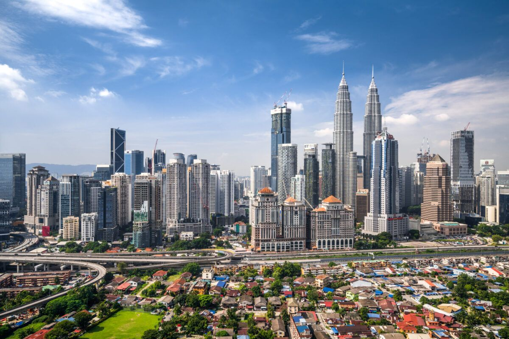

Giá từ: 11.900.000đ/người
🇲🇾 Malaysia – “viên ngọc xanh Đông Nam Á” – nơi giao thoa của nhiều nền văn hóa, tôn giáo và ẩm thực độc đáo.
Hành trình đưa bạn đến với Kuala Lumpur – thủ đô hiện đại sầm uất, nơi có tòa tháp đôi Petronas cao chót vót giữa bầu trời xanh.
Buổi sáng, du khách ghé thăm Quảng trường Độc Lập, Cung điện Hoàng gia và chiêm ngưỡng kiến trúc cổ kính xen lẫn hiện đại.
Buổi trưa, lên cao nguyên Genting – “thành phố trên mây” nổi tiếng với khu nghỉ dưỡng, sòng bài, công viên và khí hậu mát mẻ quanh năm.
Buổi chiều, hành hương đến động Batu – ngôi đền linh thiêng của đạo Hindu, nổi bật với tượng thần Murugan dát vàng cao hơn 40m.
Khi màn đêm buông xuống, ánh sáng từ tháp đôi Petronas rực rỡ giữa lòng Kuala Lumpur, soi bóng xuống mặt nước tạo nên khung cảnh tuyệt đẹp khó quên.